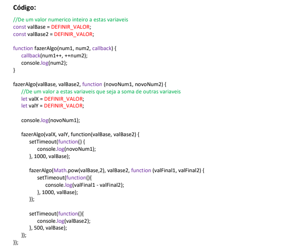
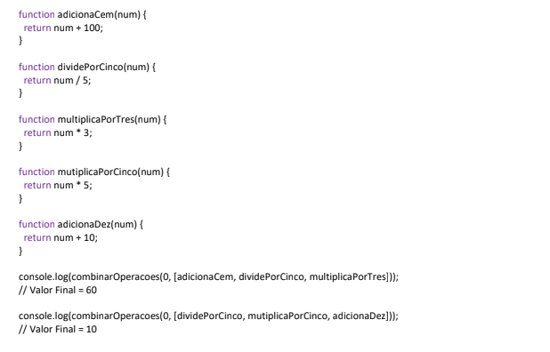
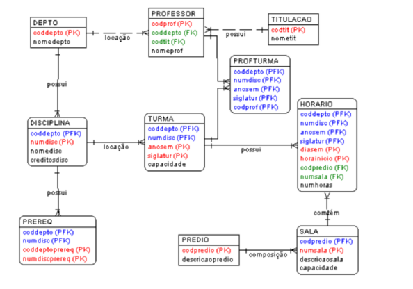
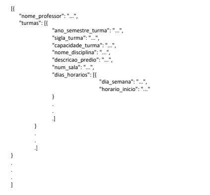

Teste de Programação / Lógica
1 - Escreva uma função recursiva eficiente que receba inteiros estritamente positivos k e n e calcule kn. Quantas multiplicações sua função executa aproximadamente?
A função executa aproximadamente log n multiplicações, sendo “n” a exponenciação da potência de entrada do problema. Então, enquanto a abordagem ingênua de 2^1000 daria 999 multiplicações, na minha abordagem, esse mesmo número seria aproximadamente 10.
function potenciacao(k,n){
//condicao de parada
if (n == 1){
return k
}
//para expoente par
if (n % 2 == 0){
let temp = potenciacao(k, n/2)
return temp * temp
}
//para expoente impar
else{
let temp = potenciacao(k, (n-1)/2)
return temp * temp * k
}
}
console.log(potenciacao(4,5))
2 - A seguinte função calcula o maior divisor comum dos inteiros estritamente positivos m e n. Escreva uma função recursiva equivalente.
Função da questão:
Minha resposta:
function euclides (m, n) {
var r;
do {
r = m % n;
m = n;
n = r;
} while (r !== 0);
return m;
}
function euclides (m, n) {
r = m % n;
if (r === 0){
return n;
}
return euclides(n, r)
}
console.log(euclides(343,7));
3 – Refatore o seguinte trecho de código abaixo utilizando Herança.
class InvestimentoRendaFixaCDI120 {
constructor() {
this.saldo = 0;
this.cdi = 120;
}
investir(valor) {
this.saldo += valor;
}
rentabilidadeInvestimento(indice) {
this.saldo += this.saldo * indice/100 * this.cdi/100;
}
imprimirSaldo(mes) {
console.log('Saldo RF 120% CDI Mês ' + mes + '= R$ ' + this.saldo);
}
}
class InvestimentoRendaFixaCDI180 {
constructor() {
this.saldo = 0;
this.cdi = 180;
}
investir(valor) {
this.saldo += valor;
}
rentabilidadeInvestimento(indice) {
this.saldo += this.saldo * indice/100 * this.cdi/100;
}
imprimirSaldo(mes) {
console.log('Saldo RF 180% CDI Mês ' + mes + ' = R$ ' + this.saldo);
}
}
var invest120 = new InvestimentoRendaFixaCDI120();
invest120.investir(1000);
invest120.imprimirSaldo('Set/2020');
invest120.rentabilidadeInvestimento(0.16);
invest120.imprimirSaldo('Out/2020');
var invest180 = new InvestimentoRendaFixaCDI180();
invest180.investir(1000);
invest180.imprimirSaldo('Set/2020');
invest180.rentabilidadeInvestimento(0.16);
invest180.imprimirSaldo('Out/2020');
Minha resposta:
class InvestimentoRendaFixaCDI{
constructor(cdi) {
this.saldo = 0;
this.cdi = cdi;
}
investir(valor) {
this.saldo += valor;
}
rentabilidadeInvestimento(indice) {
this.saldo += this.saldo * indice/100 * this.cdi/100;
}
//metodo generico que será sobrescrito pelos filhos
imprimirSaldo(mes) {
console.log(`Saldo RF ${this.cdi}% CDI Mês ` + mes + '= R$ ' + this.saldo);
}
}
class InvestimentoRendaFixaCDI120 extends InvestimentoRendaFixaCDI{
//chamando o contrutor do pai e setando o cdi
constructor(){
super(120)
}
}
class InvestimentoRendaFixaCDI180 extends InvestimentoRendaFixaCDI{
//chamando o contrutor do pai e setando o cdi
constructor(){
super(180)
}
}
var invest120 = new InvestimentoRendaFixaCDI120();
invest120.investir(1000);
invest120.imprimirSaldo('Set/2020');
invest120.rentabilidadeInvestimento(0.16);
invest120.imprimirSaldo('Out/2020');
var invest180 = new InvestimentoRendaFixaCDI180();
invest180.investir(1000);
invest180.imprimirSaldo('Set/2020');
invest180.rentabilidadeInvestimento(0.16);
invest180.imprimirSaldo('Out/2020');
//console.log(invest120);
4 - Com o trecho de código abaixo faça:
- A. Atribua valores as variáveis valBase e valBase2 que sejam dois números positivos e inteiros.
- B. Atribua valores as variáveis valX e valY que sejam a soma de outras 2 variáveis. (exemplo: valX = novoNum1 + novoNum2)
Quais valores precisam ser atribuídos às variáveis valBase, valBase2, valX e valY para que gere a saída abaixo no console?
10 13 12 6 12 10 387

valBase = 10, valBase2 = 5, valX = 20 e valY = 11.
Para valX ser 20, valX pode ser escrito como, por exemplo:
valX = novoNum1 + valBase
ou valX = valBase + valBase
Para valY ser 11, valY pode ser escrito como, por exemplo:
valY = valBase + valX/20
//De um valor numerico inteiro a estas variaveis
const valBase = 10;
const valBase2 = 5;
function fazerAlgo(num1, num2, callback) {
callback(num1++, ++num2);
console.log(num2);
}
fazerAlgo(valBase, valBase2, function (novoNum1, novoNum2) {
//De um valor a estas variaveis que seja a soma de outras variaveis
let valX = novoNum1 + valBase;
let valY = valBase + valX/20;
console.log(novoNum1);
fazerAlgo(valX, valY, function(valBase, valBase2) {
setTimeout(function() {
console.log(novoNum1);
}, 1000, valBase);
fazerAlgo(Math.pow(valBase,2), valBase2, function (valFinal1, valFinal2) {
setTimeout(function(){
console.log(valFinal1 - valFinal2);
}, 1000, valBase);
});
setTimeout(function(){
console.log(valBase2);
}, 500, valBase);
});
});
5 – A função combinarOperacoes recebe dois parâmetros: um valor inicial e um array de funções, e segue as seguintes regras:
- combinarOperacoes recebe o valor inicial para a primeira função do array.
- combinarOperacoes passa o valor retornado da primeira função para a segunda função, e assim por diante, até que todas as funções do array tenham sido executados.
- combinarOperacoes retorna o valor final retornado pela última função do array de funções.

A – Implemente a função combinarOperacoes utilizando callbacks.
function adicionaCem(num) {
return num + 100;
}
function dividePorCinco(num) {
return num / 5;
}
function multiplicaPorTres(num) {
return num * 3;
}
function mutiplicaPorCinco(num) {
return num * 5;
}
function adicionaDez(num) {
return num + 10;
}
function combinarOperacoes(numero, funcoes){
let acumulador = numero;
funcoes.forEach((funcao) =>{
acumulador = funcao(acumulador)
});
return acumulador;
/*OU BEM MAIS SIMPLES E NÃO FLEXIVEL
return funcoes[2](funcoes[1](funcoes[0](numero))); */
/* OU USANDO REDUCE
const reducao = funcoes.reduce(
(accumulator, currentValue) => currentValue(accumulator), numero);
return reducao;*/
}
console.log(combinarOperacoes(0, [adicionaCem, dividePorCinco, multiplicaPorTres]));
// Valor Final = 60
console.log(combinarOperacoes(0, [dividePorCinco, mutiplicaPorCinco, adicionaDez]));
// Valor Final = 10
B – Implemente a função combinarOperacoes utilizando Promise.
function adicionaCem(num) {
return num + 100;
}
function dividePorCinco(num) {
return num / 5;
}
function multiplicaPorTres(num) {
return num * 3;
}
function mutiplicaPorCinco(num) {
return num * 5;
}
function adicionaDez(num) {
return num + 10;
}
function combinarOperacoes(numero, funcoes){
const promise = Promise.resolve(numero)
.then((resultado)=> funcoes[0](resultado))
.then((resultado)=> funcoes[1](resultado))
.then((resultado)=> funcoes[2](resultado))
return promise;
}
combinarOperacoes(0, [adicionaCem, dividePorCinco, multiplicaPorTres]).then((resultado)=> console.log(resultado))
// Valor Final = 60
combinarOperacoes(0, [dividePorCinco, mutiplicaPorCinco, adicionaDez]).then((resultado)=> console.log(resultado))
// Valor Final = 10
C – Implemente a função combinarOperacoes utilizando async / await.
function adicionaCem(num) {
return Promise.resolve(num + 100)
}
function dividePorCinco(num) {
return Promise.resolve(num / 5)
}
function multiplicaPorTres(num) {
return Promise.resolve(num * 3)
}
function mutiplicaPorCinco(num) {
return Promise.resolve(num * 5);
}
function adicionaDez(num) {
return Promise.resolve(num + 10);
}
async function combinarOperacoes(numero, funcoes){
const resultadoFuncao1 = await funcoes[0](numero)
const resultadoFuncao2 = await funcoes[1](resultadoFuncao1)
const resultadoFuncao3 = await funcoes[2](resultadoFuncao2)
return (resultadoFuncao3)
}
combinarOperacoes(0, [adicionaCem, dividePorCinco, multiplicaPorTres]).then(resultado => console.log(resultado));
// Valor Final = 60
combinarOperacoes(0, [dividePorCinco, mutiplicaPorCinco, adicionaDez]).then(resultado => console.log(resultado));
// Valor Final = 10
6 – O DER abaixo apresenta o diagrama referente ao sistema de banco de dados acadêmico.

Indique a instrução SQL necessária para executar cada uma das solicitações abaixo. Considerar o banco de dados MYSQL 8:
A - Listar a descrição de cada prédio seguido da quantidade de salas existentes, ordenada pela descrição do prédio. Considerar apenas prédios que possuem a quantidade de salas maior do que 3.
SELECT predio.descricaopredio, count(sala.numsala) as numsalas FROM `predio` join sala on sala.codpredio = predio.codpredio group by predio.codpredio having numSalas > 3 order by descricaopredio
B - Listar o nome da disciplina seguido da sigla das turmas lecionadas pelo professor Tavares.
select nomedisc, siglatur from disciplina join turma using(coddepto, numdisc) join profturma using (coddepto, numdisc, anosem, siglatur) join professor using(codprof) where nomeprof like '%Tavares%' OU select nomedisc, GROUP_CONCAT(siglatur SEPARATOR ', ') siglatur from (select nomedisc, siglatur from disciplina join turma using(coddepto, numdisc) join profturma using (coddepto, numdisc, anosem, siglatur) join professor using(codprof) where nomeprof like '%Tavares%') resultado group by nomedisc
C – Consulta SQL que retorna um JSON com o agrupamento de professores, turmas, disciplinas, prédio, sala, dias e horarios no seguinte formato:

select JSON_ARRAYAGG(json_object(
'nome_professor', nomeprof,
'turmas', turmas)) as ''
from
(select nomeprof,
JSON_ARRAYAGG(json_object(
'ano_semestre_turma', anosem,
'sigla_turma', siglatur,
'capacidade_turma', turmacapacidade,
'nome_disciplina', nomedisc,
'descricao_predio', descricaopredio,
'num_sala', numsala,
'dias_horarios', dias_horarios
)) as turmas
from
(select
codpredio, numsala, coddepto, numdisc, anosem, siglatur, nomeprof, turmacapacidade, nomedisc, descricaopredio,
JSON_ARRAYAGG(json_object('dia_semana', diasem, 'horario_inicio', horainicio)) as dias_horarios
from
(select codprof, turma.coddepto, numdisc, anosem, siglatur, nomedisc, turma.capacidade as turmacapacidade, nomeprof
from disciplina
join turma using(coddepto, numdisc)
join profturma using (coddepto, numdisc, anosem, siglatur)
join professor using(codprof)) relacaoDiscTurmProf
left join horario using (coddepto, numdisc, anosem, siglatur)
join sala using(codpredio, numsala)
join predio using (codpredio)
GROUP by codpredio, numsala, coddepto, numdisc, anosem, siglatur, nomeprof) resultado
GROUP by nomeprof) jsonfinal